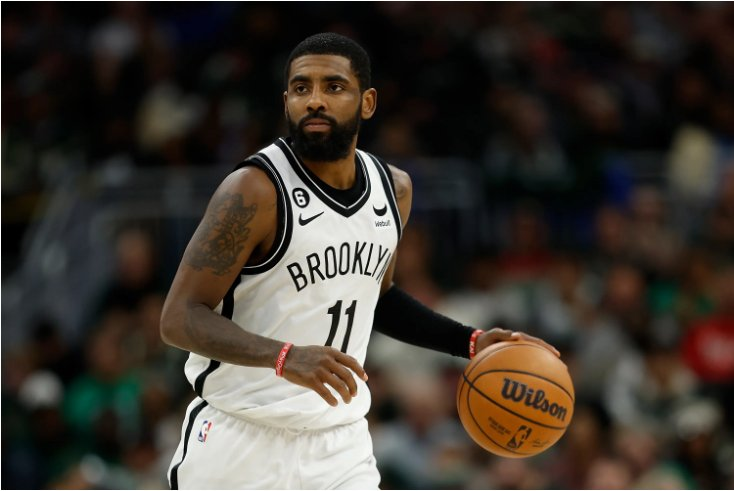
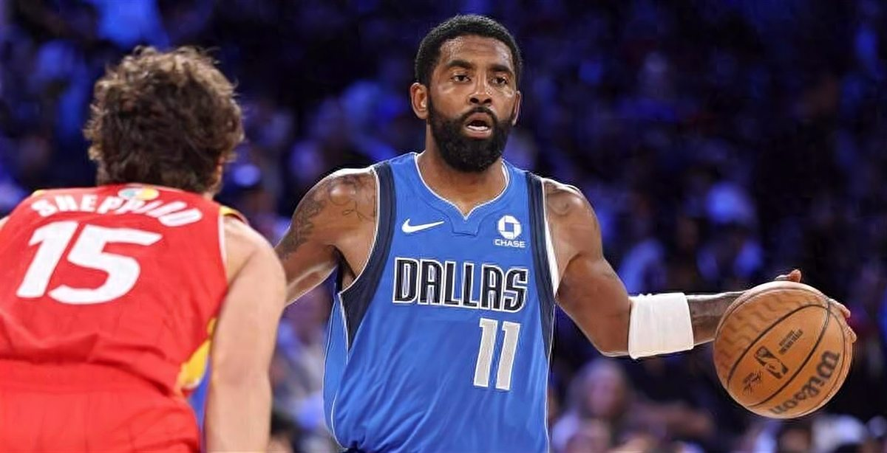
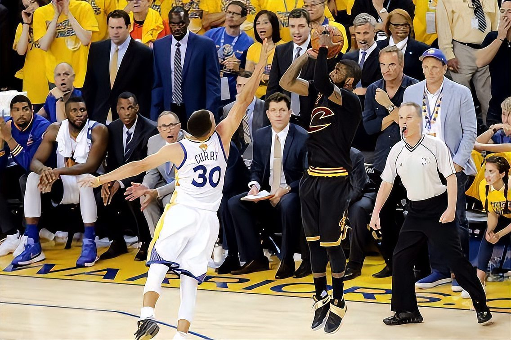
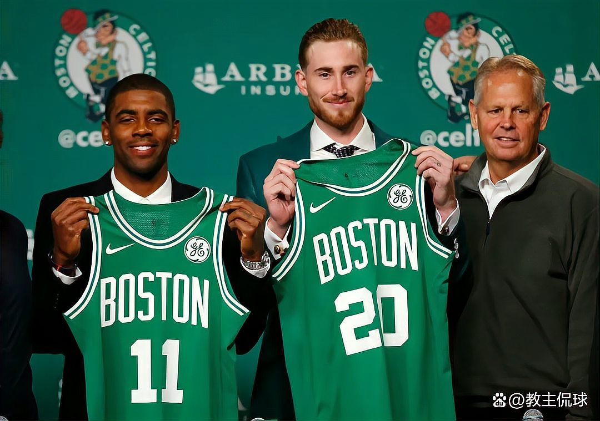
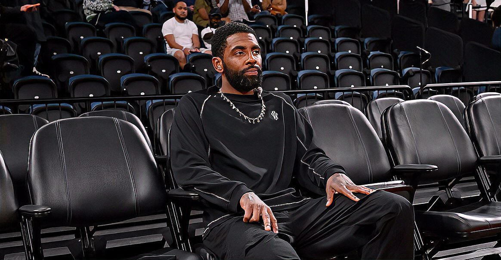
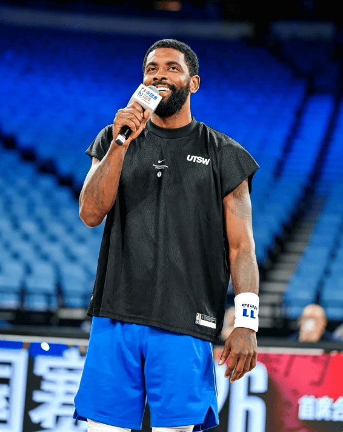

球员身份与进入NBA前经历
基本身份、位置与身体资料
凯里·欧文，英文名为 Kyrie Irving，出生于1992年3月23日，资料中其家乡记为澳大利亚墨尔本。[19] 在场上，他主要司职控球后卫；2011年参加NBA选秀前，已有资料将其称为杜克大学的组织后卫。[19][14] 欧文的篮球启蒙与家庭环境有关，其父亲德鲁·欧文曾是大学篮球运动员，为他提供了早期的篮球熏陶。[12] 少年时期，欧文在当地青年球队和学校阶段的训练、比赛中展现出较强的篮球天赋，并逐步磨炼控球与得分技术。[12]
杜克大学蓝魔队经历
进入NBA前，欧文效力于杜克大学蓝魔队；杜克大学男子篮球队长期是NCAA赛场上的知名强队，也培养过多名NBA球员。[16] 欧文在杜克大学的大学篮球生涯时间很短，资料显示其因脚伤缺席了该赛季的大部分比赛。[12] 按不计伤停场次的口径，他一共只为蓝魔队出战11场比赛。[10] 尽管出场样本有限，他在杜克期间仍展示出突出的控球、得分和进攻天赋，这也成为其选秀行情的重要基础。[12][18]
欧文所在的杜克队在当年NCAA锦标赛中以一号种子身份参赛，但在“甜蜜十六强”阶段被五号种子亚利桑那淘汰。[10] 此后，欧文提前参加NBA选秀。[10] 在杜克篮球史的叙述中，欧文的短暂大学经历也常被视为杜克进入以顶级大一新生为核心、随后快速进入NBA的“One and Done”阶段的标志性节点之一。[10]
2011年NBA选秀状元身份
2011年NBA选秀大会上，凯里·欧文在首轮第一顺位被克利夫兰骑士队选中，成为该届选秀状元。[19] 当时，骑士使用状元签选择这名来自杜克大学的后卫；相关报道以“欧文成新科状元”概括了这一结果。[11] 资料评价称，尽管欧文在杜克大学只出战11场比赛，但其展现出的进攻天赋、运球能力和投篮能力使他成为当年极具吸引力的选秀对象。[18] 由此，欧文正式进入NBA，开启职业篮球生涯。[19]
NBA职业生涯
克利夫兰骑士时期
欧文进入NBA后，凭借出色的运球能力、投篮手感和单打技巧，逐渐成为联盟中最具观赏性的后卫之一。[18] 其新秀赛季效力克利夫兰骑士时，场均得分超过18分。[12]
欧文在骑士时期最重要的团队成就是2016年NBA总冠军。[12][18] 该阶段，他与勒布朗·詹姆斯组成核心组合，骑士由此进入争冠行列。[12] 在2016年总决赛第七场比赛中，欧文命中关键三分球，帮助骑士夺得队史首个NBA总冠军，这一投也成为其职业生涯最具代表性的时刻之一。[18][12]
2017年夏天，欧文向骑士提出交易申请，随后被交易至波士顿凯尔特人。[18] 有报道将其离队动因概括为不愿继续在克利夫兰扮演詹姆斯身边副手的角色。[18]
波士顿凯尔特人时期
欧文加盟波士顿凯尔特人后效力两个赛季。[18] 这段时期，他仍保持高水平个人进攻能力，但其表现受到伤病影响而出现起伏，同时也有报道称他与队友之间存在隔阂。[18] 凯尔特人时期的经历使欧文开始被更多地置于“球队领袖”角色下审视，其个人能力与球队化学反应之间的关系也成为外界讨论重点。[18]
2019年夏天，欧文离开波士顿，与凯文·杜兰特一同加盟布鲁克林篮网。[18] 后来在2024年总决赛中，欧文以独行侠球员身份重返波士顿对阵旧主凯尔特人，TD花园球馆现场对其报以嘘声，而欧文赛前表示，波士顿经历是其职业轨迹的一部分。[62]
布鲁克林篮网时期

2019年夏天，欧文与杜兰特加盟布鲁克林篮网。[18] 在2019—2020赛季，欧文因肩伤只为篮网出战20场比赛，随后赛季报销。[18] 篮网时期，欧文在场上仍展现出高效得分能力，但其出勤、伤病以及场外争议持续影响球队稳定性。[18][79]
在篮网效力期间，欧文与杜兰特的组合一度被视为争冠核心配置。[18][79] 但相关报道也指出，欧文在不同阶段曾因疫苗接种立场、公开言论等场外事件受到争议，这些因素加剧了外界对其球队适配性的讨论。[79]
2023年2月6日，独行侠与篮网完成交易，达拉斯送出斯潘塞·丁威迪、多里安·芬尼-史密斯和多个选秀权，从篮网得到欧文和马基夫·莫里斯。[79] 这笔交易结束了欧文约四个赛季的篮网生涯，也使其首次转战西部联盟。[79]
达拉斯独行侠时期
欧文加盟独行侠后，与卢卡·东契奇组成后场核心。[79] 交易完成时，独行侠在2022—2023赛季成为当季联盟中少数拥有两名全明星首发级别球员的球队，外界关注两人在持球、关键球和组织进攻方面的分工。[79] 当时也有媒体认为，欧文的到来能在东契奇缺阵或关键时刻为球队提供额外进攻发起点。[79]
2023—2024赛季，独行侠时隔13年重新进入NBA总决赛，对手为波士顿凯尔特人。[62] 2024年6月7日总决赛首战，独行侠以89比107不敌凯尔特人，欧文作为对阵旧主的焦点之一受到关注。[62] 该场比赛中，凯尔特人延续了对欧文所在球队的连胜势头，相关报道称凯尔特人在常规赛和季后赛中对欧文已取得11连胜。[62]
2024—2025赛季受伤前，欧文为独行侠出战50场，场均得到24.7分、4.8个篮板和4.6次助攻。[54] 2025年1月，欧文曾因背部椎间盘突出预计缺阵1至2周，当时独行侠还同时面临东契奇小腿伤停的阵容压力。[63]
2025—2026年伤停与中国赛复出
2025年3月初，欧文遭遇左膝前交叉韧带撕裂，此后缺席2024—2025赛季最后20场比赛以及整个2025—2026赛季。[54] 相关报道还称，他在康复过程中曾于2025年12月遭遇二级小腿拉伤，复出时间因此被推迟。[35] 对于一名依赖变向、急停和终结技巧的后卫而言，前交叉韧带伤势使其复出状态受到持续关注。[37]
2026年10月11日，欧文在澳门举行的NBA中国赛季前赛中复出，独行侠以132比115击败休斯敦火箭。[54][37] 这是他自2025年3月受伤后首次登场，相关报道将其离场时间统计为约19个月。[35][37][54] 本场比赛欧文出战21分56秒，13投6中，三分球6投2中，罚球3罚3中，得到17分、2个篮板和3次助攻。[54][37] 他在第四节未再出场，独行侠以控制上场时间的方式完成其复出首战。[54]
这场中国赛也是独行侠新阵容的重要磨合节点。独行侠先发阵容包括欧文、扎卡里·里萨谢、库珀·弗拉格、P.J.华盛顿和丹尼尔·加福德。[42] 弗拉格在比赛中得到14分、4个篮板、7次助攻、2次抢断和1次封盖，与欧文的配合被视为独行侠新赛季进攻体系的重要看点。[37] 赛后报道认为，欧文的回归提升了独行侠后场持球与关键球处理能力，但其常规赛健康管理仍是球队面临的核心问题。[37]
复出后，欧文表示不会以剩余赛季数量衡量职业生涯，只要仍热爱NBA、身体状态允许并能在更衣室与赛场上发挥影响力，就会继续打球。[54] 他还提到，未来退役时会由自己公开宣布，可能通过社交媒体或直播方式说明下一阶段人生安排。[54] 截至2026年10月相关报道，欧文已进入个人第16个NBA赛季，并拥有9次全明星经历。[54]
国家队经历与国际赛事履历
美国男篮代表队履历
凯里·欧文的国家队经历与其大学时期主教练迈克·沙舍夫斯基（“老K”）有一定延续关系。相关报道提到，尽管他的杜克生涯很短，但他与老K的关系延续到了国家队层面。[10] 老K自2005年起执掌美国男篮后，带队取得连续三届奥运会金牌和两届FIBA篮球世界杯冠军，被视为美国男篮重建国际赛场统治力的重要阶段。[10]
在美国队体系中，欧文以控球和单打技术见长。2026年10月的媒体滚动内容中，保罗·乔治回忆过欧文在美国队队内训练中连续突破多人的片段，并称该“名场面”的背景是训练对抗中防守方一度难以顺利将球推进过半场。[49] 这一类训练片段也常被用于说明欧文在精英球员环境中的控运能力和个人进攻创造力。
奥运金牌与巴黎奥运会候选名单
可用资料显示，老K执教美国男篮期间曾率队连续三届奥运会夺金，并两次获得FIBA篮球世界杯冠军。[10] 不过，本章所列资料未提供欧文个人奥运会具体出场届次、数据或奖牌归属的可核验细节，因此不展开未获资料支持的技术统计和赛事过程描述。
关于巴黎奥运会周期，本章所列资料中没有可确认欧文入选2024年巴黎奥运会美国男篮候选名单或最终名单的记录。相较之下，2026年10月的报道条目显示，欧文曾表示自己正在争取进入澳大利亚男篮，并称相关进展需要等本赛季结束后再看。[49] 因此，在依据现有资料整理的国际赛事履历中，巴黎奥运会不列为欧文已确认参加的国际赛事经历。
技术特点与比赛风格
控球后卫定位与进攻创造
凯里·欧文在NBA长期被定位为以持球进攻为核心的控球后卫。其技术标签主要集中在控运、变向、单打和高难度终结上。2020年的选秀重排分析称，欧文的运球能力“很少有后卫能够企及”，并且结合投篮能力，使他成为2010年代“最致命的单打高手之一”。[18]

欧文的进攻创造更多依赖节奏变化和个人技术，而非传统控卫式的大量持球组织。相关评论曾指出，他职业生涯单打每回合得分达到1.12分，超过联盟96%的球员，显示出其在一对一攻坚中的高效率；但作为控卫，其场均助攻数长期没有突破7次，因此外界也常将他视为“得分型控卫”而非纯组织型控卫。[71] 在比赛中，欧文常通过胯下、背后、急停和反向启动制造防守重心偏移，再选择突破上篮、抛投、急停跳投或外线出手。[18][37]
独行侠主帅达斯蒂·梅在2026年10月评价欧文时，强调其在场上的牵制力能够为队友创造更好的空间，并称欧文和库珀·弗拉格这样的球员“创造的战术优势能让队友表现呈指数级提升”。[42] 同一时期的报道还提到，梅在观看欧文训练后形容“看他打球，就像在看毕加索作画”，反映出教练组对其控球节奏、临场创造和个人进攻美感的评价。[41]
得分效率、投篮表现与关键比赛能力
欧文的得分方式兼具篮下终结、中距离急停和三分投射。2024-25赛季受伤前，他为独行侠出战50场常规赛，场均得到24.7分、4.8个篮板和4.6次助攻，投篮命中率47.3%，三分命中率40.1%，罚球命中率91.6%。[27] 这一数据体现出他在高使用率持球后卫中仍能保持较高投篮效率，尤其是外线和罚球稳定性。[27]
欧文的关键比赛能力与其单打属性密切相关。资料显示，他在骑士时期与勒布朗·詹姆斯三次进入总决赛，并在2016年夺冠；其中2016年总决赛期间，欧文场均得到27.1分，投篮命中率46.8%。[71] 2023年加盟独行侠时，相关分析曾指出，东契奇在当季第一节场均得分11.6分排名联盟第一，而欧文第四节场均得分9.5分同样排名联盟第一，这被视为独行侠引进欧文以分担关键时刻压力的重要原因。[79]
在篮网时期，2021年对阵密尔沃基雄鹿的系列赛中，欧文场均得到22.7分，但随后因伤退赛，影响了球队后续走势。[71] 这些经历使其职业评价同时包含“关键球能力突出”和“健康稳定性不足”两方面。[18][71]
与核心队友搭档及战术适配
欧文职业生涯的进攻价值，常在与另一名高水平持球核心搭档时被放大。骑士时期，相关评论认为詹姆斯的组织和攻框牵制为欧文提供了适合其发挥单打与终结能力的环境。[71] 在篮网“三巨头”阶段，资料称当詹姆斯·哈登担任组织核心时，球队胜率达到72%；而由欧文主导进攻时，胜率为63%，这一比较常被用来说明欧文更适合与强组织者或另一名持球核心共存。[71]
2023年2月，独行侠通过交易得到欧文和马基夫·莫里斯，送出斯潘塞·丁威迪、多里安·芬尼-史密斯和多个选秀权。[79] 当时外界关注的核心问题，是欧文能否与卢卡·东契奇形成“双持球后场”。[79] 分析认为，欧文此前已经证明可以和另一名持球核心共存，并能在关键时刻承担进攻压力。[79] 不过，欧文加盟达拉斯后，独行侠也面临球权分配、队内化学反应以及长期合同安排等不确定因素。[79]
2026年复出后，独行侠的战术重心转向“欧文+库珀·弗拉格”的双核结构。2026年10月11日NBA中国赛第二场，独行侠首发为欧文、里萨谢、弗拉格、PJ·华盛顿和加福德。[42] 同场比赛中，弗拉格出战25分钟，得到14分、4个篮板、7次助攻、2次抢断和1次封盖；他多次抢下后场篮板后直接长传发动快攻，与欧文完成转换进攻配合。[37] 报道认为，欧文的持球撕裂防线能力与弗拉格的弱侧接应、快速终结和高位处理球形成互补。[41][37]
独行侠管理层和教练组也明确将两人视作新赛季核心。2026年10月的报道显示，独行侠新任管理层拒绝了多支球队对欧文的询价，并将欧文与弗拉格确立为双核体系。[41] 战术层面，欧文可承担挡拆持球、关键回合单打和外线牵制，弗拉格则可在无球空切、高位策应和防守转换中发挥作用。[41][42] 不过，报道也指出，两人都具备持球能力，如何平衡控球比例仍是教练组需要处理的课题。[41]
复出后的竞技状态评价
2026年10月11日，欧文在NBA中国赛第二场独行侠对阵火箭的比赛中复出，距离上一次正式登场约586天。[37] 在这场比赛中，独行侠以132比115战胜火箭，欧文出战21分56秒，13投6中，三分6投2中，罚球3罚3中，得到17分、2个篮板、3次助攻，且没有失误。[37][54]
从比赛内容看，欧文复出首秀展现出较好的节奏感和终结手感。报道指出，他首节通过反手上篮得到复出后首分，随后又在24秒进攻时间将尽时命中超远压哨三分；上半场结束时，他已经9投5中得到14分、2个篮板和3次助攻，并且没有失误。[37] 下半场，他继续登场完成节奏适应，最终在不到22分钟的出场时间内结束复出首战。[37][54]
外界对欧文复出后的评价总体偏积极。新浪报道认为，对于一名以变向、急停和高难度终结闻名的34岁后卫而言，前十字韧带撕裂曾使其职业前景受到担忧；但从复出首秀看，欧文依旧敢于持球突破、转身抛投和制造犯规，控球节奏与终结能力“几乎未受影响”。[37] 同一报道也提醒，季前赛强度不同于常规赛，欧文在漫长赛季中如何保持健康，仍是独行侠真正需要面对的问题。[37]
欧文本人则将长期伤病视为重新调整身体与心态的过程。2026年10月的采访中，他表示，只要自己仍热爱NBA、每天醒来身体感觉良好，就会继续比赛；他也提到，重大伤病后的康复经历让他学习如何重新塑造身体，并感谢运动医学进步为球员延长职业生涯提供了条件。[54] 从竞技层面看，2026年10月11日的复出战并不能完全证明欧文已恢复至巅峰期水准，但其首战效率、零失误表现和与弗拉格的初步化学反应，为独行侠新赛季战术体系提供了积极信号。[37][54]
数据、荣誉与重要表现
NBA常规赛与季后赛数据
2024-25赛季，欧文为达拉斯独行侠出战50场常规赛，场均得到24.7分、4.8个篮板、4.6次助攻和1.3次抢断，投篮命中率约47%，三分命中率超过40%。[41] 这一赛季后期，他在2025年3月对阵萨克拉门托国王的比赛中遭遇左膝前交叉韧带撕裂，随后进入长期康复周期。[41]
季后赛方面，欧文最具代表性的阶段是随克利夫兰骑士连续冲击总冠军的时期。[66] 在2016年NBA总决赛中，欧文场均贡献26.6分、3.8个篮板和4.2次助攻，帮助骑士夺得队史首个NBA总冠军。[66] 2015年总决赛期间，欧文曾因左膝髌骨骨折缺席后续比赛，骑士最终未能夺冠。[51] 2024年，欧文随独行侠重返总决赛舞台；该年总决赛首战，独行侠以89比107不敌波士顿凯尔特人，欧文上半场9投3中得到6分，整场比赛受到凯尔特人防守和波士顿主场氛围的明显限制。[62]
全明星、最佳阵容等个人荣誉
进入联盟后，欧文在职业生涯第二个赛季即入选NBA全明星阵容。[66] 在有关2011届选秀球员的回顾性评价中，腾讯网转载的NBA记者Sean Highkin文章认为，欧文凭借控球和投篮能力成为2010年代最具杀伤力的单打得分手之一，并在该届球员重排中位列科怀·莱昂纳德、克莱·汤普森之后。[18]
团队荣誉方面，欧文随骑士获得2015-16赛季NBA总冠军。[66] 这一冠军也成为其职业生涯荣誉履历中最重要的团队成就之一。[18][66]
NBA总冠军与总决赛表现
2016年总决赛是欧文职业生涯的代表性系列赛之一。[66] 骑士在该轮系列赛中击败常规赛取得73胜的金州勇士，完成夺冠。[64] 欧文在系列赛中场均得到26.6分、3.8个篮板和4.2次助攻，并在第七场关键时刻面对斯蒂芬·库里命中决定性三分，帮助骑士锁定胜局。[66] 这记投篮后来成为欧文生涯最著名的关键球之一。[18]

2017年，骑士与勇士再次会师总决赛，但勇士以5场结束系列赛，欧文与骑士未能完成卫冕。[66] 2017年休赛期，欧文提出交易申请，随后离开骑士体系。[66] 2024年，欧文随独行侠再次进入总决赛；独行侠总决赛首战以89比107负于凯尔特人，而凯尔特人当时在常规赛和季后赛面对欧文所在球队已取得11连胜。[62] 独行侠最终在该年总决赛中负于凯尔特人。[35]
生涯里程碑与重要比赛数据
欧文的职业生涯里程碑首先包括2011年以状元身份进入NBA。[18] 在克利夫兰时期，他从球队重建核心成长为总冠军后场核心，并在2016年总决赛第七场命中关键三分，完成其生涯最具标志性的比赛瞬间之一。[18][66]
伤病也是欧文生涯数据和出场纪录中的重要变量。2015年总决赛，他因左膝髌骨骨折缺席系列赛后续比赛。[51] 2017-18赛季效力凯尔特人期间，欧文在常规赛收官阶段接受左膝手术并赛季报销；该手术用于移除2015年左膝修复手术中植入、后来引发炎症的钢钉。[51] 2025年3月，欧文又遭遇左膝前交叉韧带撕裂，导致长期休战。[41]
2026年10月11日，欧文在NBA中国赛澳门站独行侠对阵火箭的季前赛中复出，这是他因伤缺席约19个月后的首次正式比赛出场。[38][35] 该场比赛独行侠以132比115击败火箭，欧文出战约22分钟，13投6中，三分球6投2中，得到17分、2个篮板和3次助攻。[35] 多家报道将这场比赛称为其伤停后“华丽复出”，并强调其时隔586天重返赛场受到现场球迷欢迎。[49] 需要说明的是，该场为季前赛，不计入NBA常规赛或季后赛正式统计。[35][49]
伤病、缺阵与复出历程
2015年总决赛左膝伤势
2015年NBA总决赛期间，凯里·欧文遭遇左膝髌骨骨折，并因此缺席总决赛后续比赛；骑士最终无缘该年总冠军，欧文的缺阵被视为影响系列赛走势的重要因素之一。[51] 同年6月7日，欧文在克利夫兰接受左膝修复手术，手术中植入了用于修复髌骨伤势的钢钉。[51] 这次伤势成为其职业生涯早期最重大的伤病节点之一，也为其之后左膝相关问题埋下后续影响。[51]
凯尔特人时期膝伤与赛季报销
2017—2018赛季，欧文效力波士顿凯尔特人期间再次受到左膝问题困扰。[51] 2018年3月25日，他接受左膝微创手术，手术内容包括移除2015年总决赛伤后植入的两根钢钉；据当时报道，这些钢钉导致其左膝出现炎症。[51] 凯尔特人随后宣布欧文手术成功，但他因此赛季报销，缺席该赛季剩余比赛。[51]
该赛季凯尔特人伤病情况严重，戈登·海沃德、丹尼尔·泰斯等人也遭遇赛季报销级别伤病；欧文在常规赛收官阶段的手术，使球队在季后赛前失去核心后卫。[51] 2020年一篇回顾2011届选秀的报道亦提到，欧文在波士顿的两个赛季状态因伤病而起伏。[18]
篮网时期伤病缺阵
2019年夏天，欧文离开波士顿，与凯文·杜兰特一同加盟布鲁克林篮网。[18] 在2019—2020赛季，他仅为篮网出战20场比赛，随后因肩伤赛季报销。[18] 该阶段的公开资料显示，伤病延续了外界对其“持久度”的讨论；同一篇2020年报道在评价其职业生涯时，将健康稳定性列为其主要不足之一。[18]
独行侠时期左膝前十字韧带撕裂与长期康复
欧文在达拉斯独行侠时期遭遇职业生涯另一重大伤病。公开报道对受伤日期有不同时区口径：有报道记为当地时间2025年3月3日，也有报道记为北京时间2025年3月4日；事件均指向其在对阵萨克拉门托国王的比赛中遭遇左膝前十字韧带撕裂。[37][54] 另有报道称，欧文是在一次突破中踩到约纳斯·瓦兰丘纳斯的脚后空中失衡倒地，随后被确认为左膝前十字韧带撕裂。[25]
该伤势使欧文缺席2024—2025赛季最后20场比赛，并缺席整个2025—2026赛季。[54] 2026年2月，独行侠确认欧文该赛季不会复出，将继续进行膝盖恢复，目标转向2026—2027赛季回归。[25] 康复过程中，他还在2025年12月遭遇小腿伤势，停训约四周，整体康复日程因此推迟近两个月。[33]
对于一名依赖变向、急停和高难度终结的后卫而言，左膝前十字韧带撕裂被认为具有较高职业风险；2026年报道指出，欧文当时已34岁，这一伤病一度引发外界对其运动能力和职业前景的担忧。[37] 但独行侠最终选择较长周期的康复安排，欧文也因此完整缺席2025—2026赛季，以确保复出时具备更稳定的身体状态。[25][33]
2026年中国赛复出后的出场管理
2026年NBA中国赛期间，欧文完成伤愈复出。中国赛首战中，独行侠以117比135不敌休斯顿火箭，欧文缺阵。[37] 第二场于北京时间2026年10月11日在澳门进行，独行侠以132比115击败火箭，欧文在时隔约19个月后重返赛场。[37][54]
复出首战中，欧文出战21分56秒，13投6中，三分球6投2中，罚球3罚3中，得到17分、2个篮板、3次助攻，且没有出现失误。[37][54] 报道称，他在首节通过反手上篮得到复出后首分，并命中一记远距离压哨三分；半场结束时已得到14分、2个篮板和3次助攻。[37] 他第四节未再登场，实际出场时间被控制在22分钟以内。[54]
赛前，独行侠主帅达斯蒂·梅表示，长期伤停后的球员复出重点在于重新融入比赛、找回节奏，而不是单场表现评价。[42] 中国赛后，多家报道也将欧文的出场时间控制视为保护性安排；由于该场属于季前赛，球队主要目标包括磨合阵容、考察球员并降低伤病风险。[37] 对独行侠而言，欧文复出后的核心课题转向常规赛负荷管理，即在保持其进攻牵制力和关键球能力的同时，控制出场时间与连续比赛负担。[37][54]
转会、合同与球队关系
2017年申请离开骑士与加盟凯尔特人

2017年夏天，欧文在克利夫兰骑士夺得2016年总冠军、并连续多年与勒布朗·詹姆斯合作进入总决赛后，向球队提出交易申请；有资料将其动因概括为希望摆脱“詹姆斯助手”的定位、争取更独立的球队角色。[18][64] 同年休赛期，骑士最终将欧文交易至波士顿凯尔特人，换回以赛亚·托马斯、杰·克劳德、安特·日日奇、1个首轮签和1个次轮签；交易发生时，欧文原合同还剩两年。[56]
围绕这笔交易，当时联盟内曾出现多种报价传闻，包括马刺以拉马库斯·阿尔德里奇、丹尼·格林和托尼·帕克为主体的方案，雄鹿围绕贾巴里·帕克的方案，以及涉及尼克斯、太阳和卡梅隆·安东尼、埃里克·布莱德索等人的讨论；最终凯尔特人的方案成为骑士接受的交易包。[66] 这笔交易也标志着欧文离开骑士“詹姆斯—欧文”核心架构，转向波士顿寻求新的球队定位。[18][64]
2017-18赛季，欧文代表凯尔特人出战60场常规赛，场均得到24.4分、3.8个篮板、5.1次助攻和1.1次抢断，投篮命中率49.1%、三分命中率40.8%、罚球命中率88.9%。[56] 2018年4月6日，欧文接受左膝手术并赛季报销，未能参加该赛季季后赛；凯尔特人随后在东部决赛抢七中不敌骑士。[56]
欧文与凯尔特人的关系在第二个赛季出现波动。2018年10月，他曾在北岸花园球馆面对球迷表示，如果球迷希望他留下，他计划在次年与凯尔特人续约；但到2019年2月，他改口称会做出“对自己最有利”的续约选择。[56] 相关报道还提到，他在波士顿两个赛季期间因伤病影响表现起伏，并有与队友存在隔阂的说法。[18]
2019年离开凯尔特人与加盟篮网
2019年休赛期，欧文以自由球员身份离开凯尔特人，加盟布鲁克林篮网，并与凯文·杜兰特一同成为篮网重建争冠阵容的重要引援。[18][56] 对凯尔特人球迷而言，欧文此前曾公开表达续约意愿，随后又离队加盟篮网，这一过程使他与波士顿球迷的关系明显恶化。[56]
欧文离队后的凯尔特人旧怨在之后数年持续发酵。2020-21赛季，他回到北岸花园球馆时曾手持鼠尾草在场馆内活动，并解释为“净化能量”；同一时期，他还被报道在赛后用鞋底踩踏凯尔特人队标头部位置，这些行为进一步激怒部分凯尔特人球迷。[56] 2020-21赛季相关比赛后，有球迷向欧文投掷饮料瓶并被警方逮捕。[56] 2022年季后赛首轮，凯尔特人4比0横扫篮网，欧文在面对球迷嘘声时竖中指回应，随后被NBA罚款5万美元。[56]
在篮网初期，欧文的出勤也受到伤病影响。2019-20赛季，他仅代表篮网出战20场比赛，之后因肩伤赛季报销；杜兰特当季也因跟腱伤势缺席，使篮网“双星”组合未能立即完整亮相。[18]
2022年篮网续约谈判、球员选项与交易流言
2021-22赛季，欧文因拒绝接种新冠疫苗而在常规赛大部分时间无法参加篮网主场比赛，篮网阵容长期不稳定，并在季后赛首轮被凯尔特人4比0淘汰。[72] 赛季结束后，欧文与篮网围绕续约问题陷入僵持；报道称，篮网因其不稳定因素不愿提供长约，欧文也无法接受球队提出的部分续约条款，双方出现严重不信任。[72]
在谈判受阻后，欧文一度希望通过先签后换离队，并列出湖人、快船、尼克斯、热火、独行侠和76人等心仪下家，其中湖人被报道为意向较强的球队。[72] 由于这些球队普遍缺乏直接签下欧文的薪金空间，若没有篮网配合，他可能只能接受约640万美元的中产合同。[72]
2022年6月28日，欧文宣布执行2022-23赛季价值约3700万美元的球员选项，继续留在篮网。[72] 该决定短期内终结了当年夏天的离队风波，但并未完全消除他与篮网管理层之间的长期不确定性；当时的分析认为，欧文若在新赛季打出身价，仍可能继续与篮网谈续约，或在赛季中被球队交易。[72]
2023年申请交易并加盟独行侠
2023年2月，欧文再次成为交易市场焦点；北京时间2月6日，达拉斯独行侠与篮网达成交易，独行侠送出斯潘塞·丁威迪、多里安·芬尼-史密斯和多个选秀权，从篮网得到欧文和马基夫·莫里斯。[79] 这笔交易使欧文在效力篮网约4个赛季后离队，也让独行侠在卢卡·东契奇身边获得一名全明星级后场搭档。[79]
交易达成前后，独行侠管理层被报道曾征询东契奇意见，东契奇对引援表现出兴奋和期待。[79] 欧文与东契奇此前互相欣赏，而欧文也公开表示自己从小是独行侠主教练杰森·基德的球迷，并用“欣喜若狂”形容加盟达拉斯后的心情。[79] 不过，这笔交易也伴随风险评估：ESPN当时给独行侠操作打出D级评价，《纽约时报》资深篮球专家也称欧文可能只是一次“租借”。[79]
合同层面，独行侠并未在交易当季立即给予提前续约保证，而是倾向于在2023年休赛期重新开启合同谈判。[79] 当时ESPN分析认为，独行侠可能会根据欧文在达拉斯的表现，提供一份不超过3年的合同，以兼顾东契奇未来球员选项前的阵容弹性。[79]
加盟独行侠后的2022-23赛季剩余阶段，欧文出战20场，场均得到27.0分、5.0个篮板、6.0次助攻和1.3次抢断，投篮命中率51.0%、三分命中率39.2%、罚球命中率94.7%。[25] 2023-24赛季，他与独行侠一同打进NBA总决赛；该赛季常规赛欧文场均25.6分、5.0个篮板、5.2次助攻和1.3次抢断，季后赛场均22.1分、3.7个篮板、5.1次助攻和1.0次抢断。[25]
2026年独行侠合同状态与交易流言
2025年3月，欧文在独行侠对阵国王的比赛中突破时踩到约纳斯·瓦兰丘纳斯的脚，随后确认为左膝前交叉韧带撕裂。[25] 2026年2月，独行侠官方确认欧文2025-26赛季不会复出，并计划让其继续恢复、于2026-27赛季回归。[25] 2025年休赛期，欧文跳出原合同最后一年球员选项，与独行侠签下3年1.19亿美元全额保障合同；合同在2025-26赛季年薪为3657万美元，随后两年分别为3949万美元和4242万美元。[25]
截至2026年10月，欧文仍处于这份3年合同期内。[25] 2026年10月11日，欧文在NBA中国赛独行侠对火箭的季前赛中时隔约19个月重返赛场，并有报道称其复出战得到17分。[38][49][50] 这一复出被视为独行侠新赛季评估其竞技状态和合同价值的重要节点。[38][50]
与此同时，欧文的交易流言并未完全消失。2026年10月的报道中，有NBA记者称竞争对手高管认为欧文可能成为交易截止日前的候选人，火箭和热火被提及为潜在追求者。[41] 相关报道也指出，欧文若能在复出后维持高水平得分表现，仍可能吸引球队报价，但其伤病史会影响交易市场对其价值的评估。[41] 另一方面，围绕独行侠阵容前景的评论也提到，球队仍需在欧文复出、年轻核心成长和季后赛竞争目标之间权衡。[25][38]
争议事件与公众评价
疫苗立场及对篮网出场资格的影响
凯里·欧文在布鲁克林篮网效力期间，因疫苗接种立场成为NBA舆论场中的焦点人物之一。媒体在回顾其篮网生涯时，常将其“拒绝打疫苗所引发的一系列连锁反应”列为其场外争议的重要组成部分，并把该事件与其在球队中的稳定性、出勤安排和管理难度联系起来讨论。[79] 另有报道指出，欧文在转会篮网后关于疫苗接种的态度，以及他对球队管理的部分看法，引发了外界嘲讽和讨论，也使其同时承受公众批评与球队压力。[12]
这一事件加深了外界对欧文“特立独行”形象的认知。相关评论认为，他在社会与政治议题上的公开表达常常超出篮球本身，并使其公众形象在“坚持自我”与“影响球队稳定”之间产生分裂评价。[12] 在2023年篮网将欧文交易至达拉斯独行侠前后，媒体仍将疫苗争议作为评估其交易风险的重要背景之一。[79]
反犹争议、停薪禁赛与商业影响
欧文在篮网时期还曾卷入反犹争议。相关媒体在回顾其场外问题时，将“反犹太事件”与疫苗争议、有关“世界和平”的言论等并列，视为其职业生涯中影响球队判断和公众评价的重大场外事件之一。[79] 在交易评价中，ESPN即使认可欧文在球场上对独行侠和卢卡·东契奇的潜在帮助，仍因其场外不确定性给独行侠得到欧文的交易打出D级评价。[79]
2022年11月，欧文因涉及反犹争议的言行受到布鲁克林篮网处罚。篮网官方宣布对其停薪禁赛，停赛期不少于5场，并表示他需要完成一系列旨在解决其有害行为影响的补救措施后，才适合重新与球队建立联系。[58] 篮网在公告中称，球队曾尝试与欧文沟通，帮助其理解语言和行为造成的伤害，但对其在媒体采访中仍未明确澄清有关问题感到失望。[58]
该争议也影响了外界对欧文合同与市场价值的判断。2023年2月欧文被交易至独行侠时，《纽约时报》资深篮球专家曾称“欧文可能只是一次租借”，而独行侠方面也未在赛季中给出提前续约保证，选择将续约谈判留到休赛期重新评估。[79] 从商业与合同层面看，球队对欧文的态度体现出一种谨慎策略：既看重其全明星级别的竞技能力，也担忧其场外争议可能带来的长期风险。[79]
伤病缺阵、报告与联盟处罚相关讨论
在可用公开资料中，关于欧文“伤病报告违规及联盟处罚”的具体细节并不充分；相关报道更多集中于其伤病缺阵、复出管理以及健康风险对球队判断的影响。2017—2018赛季，欧文效力波士顿凯尔特人期间因左膝问题接受手术，凯尔特人官方随后宣布其赛季报销。[51] 2019—2020赛季，他加盟篮网后因肩伤仅出战20场比赛便赛季报销。[18]
2025年3月，欧文遭遇左膝前交叉韧带撕裂，并因此缺席2024—2025赛季最后20场比赛以及整个2025—2026赛季。[54] 2026年10月，他在NBA中国赛中时隔约19个月复出，出战21分56秒得到17分，帮助独行侠以132比115击败休斯敦火箭。[37][54] 由于其打法依赖变向、急停和高难度终结，伤病恢复情况也成为公众评价其职业后期价值的重要因素。[37]
更衣室关系、媒体形象与球迷评价
欧文的更衣室关系长期是媒体讨论的重要议题。2017年夏天，他因不愿继续作为勒布朗·詹姆斯身边的副手而向克利夫兰骑士提出交易申请，随后被交易至凯尔特人。[18] 一些评论认为，欧文希望证明自己能够独立带队取得成功，但其在凯尔特人时期与年轻核心及更衣室的关系并不顺畅。[64] 2019年夏天，他离开波士顿并与凯文·杜兰特共同加盟篮网，但在篮网时期又因伤病与场外争议持续受到关注。[18][79]
2019年关于凯尔特人的报道提到，上赛季凯尔特人球员自发组织训练时，欧文曾独自坐到球馆观众席，一位在场人士称其“孤立自己”；报道还援引助理教练说法称，欧文在多次航班和电梯接触中很少交流。[69] 2023年独行侠交易得到欧文后，中文媒体以“拆队专家”等带有争议色彩的标签形容其过往经历，并回顾了其在骑士、凯尔特人和篮网时期引发的多重舆论争议。[79] 这些报道反映出，欧文的更衣室关系和球队稳定性长期是媒体评价其职业价值时的重要维度。[69][79]

球迷评价同样呈现两极化。一方面，欧文的控球技术、关键球能力和2016年总决赛第七场关键三分，使其长期拥有大量支持者。[18] 另一方面，其疫苗立场、反犹争议、离队申请和更衣室传闻，使反对者将其视为高风险球星。[79] 2026年10月中国赛复出后，部分评论称“神仙还是那个神仙”，认为其在重伤后仍能贡献17分且保持零失误超出预期。[37] 也有媒体提醒，季前赛强度不能完全代表常规赛，34岁的欧文如何保持健康仍是独行侠真正需要面对的问题。[37]
球队、教练与公众人物的回应
不同阶段的球队管理层和教练对欧文的态度，往往体现出“能力认可”与“风险控制”并存的特点。2023年独行侠交易得到欧文前，管理层曾征询东契奇意见，并最终送出斯潘塞·丁威迪、多里安·芬尼-史密斯和多个选秀权，从篮网得到欧文和马基夫·莫里斯。[79] 但独行侠没有立即给出提前续约保证，显示球队仍希望通过赛季表现再评估长期合作。[79]
到2026年独行侠新赛季前后，球队公开表态更为积极。独行侠主帅达斯蒂·梅在欧文复出前表示，欧文和库珀·弗拉格这样的球员具备极强牵制力，能够让队友获得更好的空间和机会；他也强调，欧文长期伤停后复出，重点应是重新融入比赛节奏，而不是单场表现好坏。[42] 另有报道称，梅在观看欧文训练后称“看他打球，就像在看毕加索作画”。[41]
独行侠管理层在2026年也将欧文与弗拉格视为核心组合。报道显示，新任总经理迈克·施密茨称两人是“天作之合”，球队管理层并拒绝了多支球队对欧文的询价。[41] 弗拉格在中国赛后也表示，他与欧文在场内外有很多交流，并感谢欧文对自己的评价。[37]
欧文本人则在2026年复出后将伤病经历描述为重新认识职业身份和领导责任的过程。他表示，只要自己仍热爱NBA、热爱更衣室氛围并能保持身体状态，就会继续打下去；他还称退役时会由自己宣布，可能通过社交媒体或直播说明下一阶段人生安排。[54] 这种表态延续了其职业生涯中一贯的自主性，也再次强化了外界对其“独立、复杂且难以预测”的公众印象。[12][54]
场外活动与社会影响
公益行为与社会捐助
在公开报道中，欧文的公益和社会责任形象常与其个人立场、公众表达和球迷互动相互交织。2022年关于篮网续约讨论的报道提到，篮网老板蔡崇信及其夫人吴明华既欣赏欧文的篮球技术，也欣赏其公益行为，但该报道并未列出具体捐助项目或金额。[73] 因此，就可核验资料而言，欧文公益行为的细节公开度低于其竞技表现和公共争议。

欧文在中国球迷群体中也具有较高关注度。2026年10月NBA中国赛期间，欧文谈到自己从19岁起就经常来到中国，并称中国球迷的长期支持既是一份荣誉，也是一份社会责任；他还表示在中国建立了许多朋友关系和情感羁绊，再次来到中国比赛有“回到第二个家”的感觉。[26] 这一表述显示，欧文将跨国球迷支持视为个人社会影响的一部分，而不只是商业曝光或赛事宣传。
此外，2026年10月中国赛复出后，欧文表示漫长康复经历使其重新理解球员身份与人生定位，并希望自己的回归能够激励下一代篮球少年。[26] 这一类公开表态强化了他在球迷群体中的励志叙事，尤其是在经历左膝前交叉韧带撕裂并缺席较长时间后，其复出被媒体和球迷赋予了超越比赛本身的象征意义。[37][41]
商业价值与品牌合作
欧文的商业价值主要来自其球星身份、鲜明个人风格、国际球迷基础以及持续的话题性。2023年2月，达拉斯独行侠通过交易得到欧文和马基夫·莫里斯，送出斯潘塞·丁威迪、多里安·芬尼-史密斯和多个选秀权；交易完成后，独行侠成为当时联盟中拥有两名全明星首发球员的球队之一。[79] 这一交易不仅反映出欧文在篮球层面的市场价值，也显示其作为明星球员仍能显著改变球队关注度和外界预期。[79]
欧文的商业曝光在中国市场尤为突出。2026年10月NBA中国赛期间，欧文因伤愈复出成为赛事核心看点之一，多家报道将其复出状态、出场时间和与独行侠年轻核心的配合作为观赛重点。[37][41] 同一时期，安踏在澳门街头为欧文球鞋进行宣传，这表明其个人装备和球鞋形象仍是赛事周边商业传播的重要元素。[49]
欧文与中国球迷的互动也具有商业传播效应。2026年10月中国赛前后，相关报道记录了欧文为球迷签名、与球迷拥抱并获得现场欢呼的场景。[49] 在同一轮中国赛中，欧文时隔586天重返赛场，相关视频、赛前热身、球迷反应和复出表现持续出现在篮球媒体滚动报道中。[37][49] 这些内容扩大了其复出事件的传播范围，也强化了其在中国篮球消费市场中的可见度。
欧文的大学背景同样构成其个人品牌的一部分。杜克大学长期以篮球传统闻名，欧文、锡安·威廉姆森、杰森·塔图姆等NBA球员均被列为该校知名篮球校友。[16] 欧文在2011年加入杜克男篮，被视为杜克篮球进入由高水平大一新人主导阶段的重要节点之一；虽然他因伤实际只为杜克出战11场比赛，但其与杜克及迈克·沙舍夫斯基教练的关系延续到国家队时期。[10] 这种名校篮球背景为其职业形象增加了“杜克系球员”的识别标签。[10][16]
媒体曝光、社交平台与公众话题性
欧文长期是NBA中话题性较高的球员之一，其公众形象由精湛球技、独立个性、社交媒体言论和多次场外争议共同塑造。2024年的报道将其描述为“极具争议性”的球员，指出其比赛表现和场外举动都容易引发广泛关注与讨论。[12] 该报道还提到，欧文在社交媒体上表达社会与政治观点时屡次引发争议，尤其是在篮网时期关于疫苗接种态度和球队管理相关观点的问题上受到舆论关注。[12]
疫苗问题曾显著影响欧文在篮网时期的公众评价。2022年3月的报道指出，受纽约疫苗政策影响，欧文常规赛一度只能参加有限客场比赛，杜兰特也在采访中表示无法控制他人的选择，只能专注于自己的工作。[73] 同一报道还提到，篮网内部对是否续约欧文存在顾虑，原因之一是其未来和个人决定具有不确定性。[73] 这些事件使欧文的个人选择与球队竞争目标之间的关系成为长期公共议题。[73]
欧文的社交话题并不只限于争议事件，也包括球迷文化和符号化传播。2023年1月，NBA官方推特转发解说员关于欧文身穿11号球衣原因的视频，内容提到他在凌晨1点11分出生、父亲大学时期穿11号、“Kyrie Irving”共有11个字母、字母K在英文字母表中排第11位、为杜克大学出战11场、2011年第1轮第1顺位被选中，以及在3月11日得到生涯第11000分等细节。[20] 该话题随后引发球迷围绕数字、球衣号码和欧文个人形象的大量讨论，显示其个人符号容易在社交平台上被二次传播和再解释。[20]
截至2026年10月12日，欧文的公众形象仍呈现明显的双重性：一方面，他因控球技术、关键球能力和复出故事持续获得球迷关注；另一方面，疫苗立场、反犹争议、球队关系和社交媒体言论也长期影响外界对其职业稳定性与社会责任的评价。[12][37][58][73][79] 这种高度话题性使欧文不仅是篮球场上的明星球员，也是NBA公共舆论场中持续被讨论的人物之一。[12][79]
参考资料
- 网易https://3g.163.com/money/article/H431H50205299B1S.html↩
- 新浪网https://sports.sina.com.cn/z/duke2011/index.shtml↩
- 搜狐网https://news.sohu.com/a/831791866_122066681↩
- 单机游戏_单机游戏下载_单机游戏门户_游侠网https://mip.ali213.net/news/html/19038.html↩
- 腾讯网https://mp.weixin.qq.com/s?__biz=MzA4OTA5MDAyMQ==&mid=2652886901&idx=1&sn=f5fafa79c1fcb83afe140f2205e7774f&chksm=8ab478fcf7c52b43d978c1ca27aab355b82974e94f436a2953446631cdf62fe18082caf16c98&scene=27↩
- 腾讯网https://m.live.qq.com/news/app/share/20201227309601.html↩
- 球迷屋https://www.qiumiwu.com/question/4311280303↩
- 虎扑体育网https://m.hupu.com/bbs/57218434↩
- 百家号https://baijiahao.baidu.com/s?id=1857528355754875548&wfr=spider&for=pc↩
- 搜狐网https://m.sohu.com/a/1086607521_121714377/↩
- 百家号https://baijiahao.baidu.com/s?id=1878798100628887593&wfr=spider&for=pc↩
- 懂球帝https://m.dongqiudi.com/xinwen/13880↩
- 懂球帝https://m.dongqiudi.com/xinwen/13418↩
- 新浪网https://sports.sina.cn/2026-10-12/detail-iniuwuvt5492694.d.html↩
- 新浪网https://sports.sina.cn/2026-10-11/detail-iniuwkfx5625650.d.html↩
- 新浪网https://sports.sina.cn/2026-10-11/detail-iniuwcxz5696925.d.html↩
- 新浪网https://sports.sina.cn/2026-10-11/detail-iniuwcyi8806477.d.html↩
- 直博吧https://zhibo8.cc/nba/more.htm↩
- 新浪网https://sports.sina.cn/2026-10-11/detail-iniuwkhf8779844.d.html↩
- 人民网http://sports.people.com.cn/n1/2018/0413/c22151-29923800.html↩
- 懂球帝https://m.dongqiudi.com/xinwen/13419↩
- 百家号https://baijiahao.baidu.com/s?id=1801189764935573812&wfr=spider&for=pc↩
- 央视国际https://sports.cctv.com/2022/11/04/ARTI0eOEkp1yqVbML7rY2DWN221104.shtml↩
- 网易https://www.163.com/dy/article/J42UGKRU0514R9P4.html↩
- 百家号https://baijiahao.baidu.com/s?id=1820532726442034277&wfr=spider&for=pc↩
- 百家号https://baijiahao.baidu.com/s?id=1820430575629136947&wfr=spider&for=pc↩
- 百家号https://baijiahao.baidu.com/s?id=1769776940050821624&wfr=spider&for=pc↩
- 齐鲁网https://sdxw.iqilu.com/share/YS0yMS02MTM5MzQw.html↩
- 搜狐网https://www.sohu.com/a/996616433_121926103↩
- 百家号https://baijiahao.baidu.com/s?id=1736848622107160003&wfr=spider&for=pc↩
- 百家号https://baijiahao.baidu.com/s?id=1728110180884532657&wfr=spider&for=pc↩
- 百家号https://baijiahao.baidu.com/s?id=1757064673417667609&wfr=spider&for=pc↩